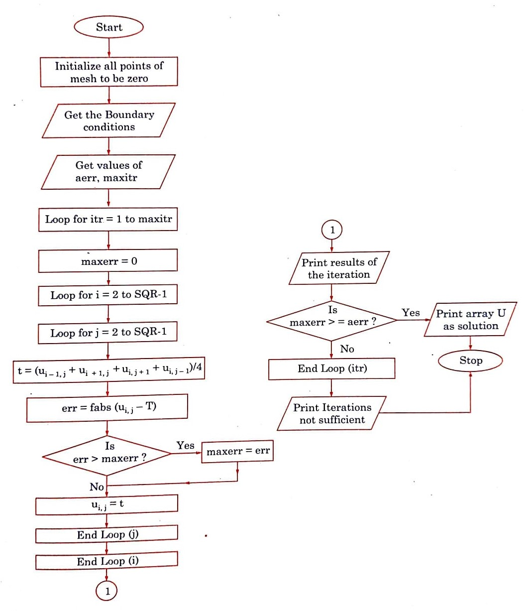

Home
Methods
Tutorials
Python
Matlab
Google Colab
Upgrade to Pro
Search

Laplace's Algorithm
Define function
Get the values of Boundary Conditions
Get values of aerr and maxitr
loop
i=2,j=2
n = (xn – x0)/h + 1
is err>maxerr
print results
Stop
The accuracy of calculations depends on the mesh-size, i.e., smaller the h, the better the accuracy. But if h is too small, it may increase rounding-off errors and also increases the labor of computation.
Learn more